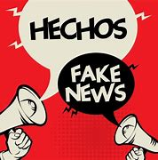

Relación entre el periodismo, la ética y el fenómeno de la post-verdad.
El artículo "Journalism, ethics and post-truth" de Rodrigo-Alsina y Cerqueira explora la compleja relación entre el periodismo, la ética y el fenómeno de la post-verdad en la era contemporánea. Uno de los aspectos más destacados es cómo la post-verdad desafía los principios éticos del periodismo, poniendo en riesgo la veracidad y la integridad de la información. Como estudiante de comunicación social, es evidente que la responsabilidad de los medios de comunicación en la sociedad es crucial ya que su papel no es solo informar, sino también preservar la verdad en un contexto donde las noticias falsas pueden influir en la opinión pública de manera significativa. La relación entre la post-verdad, las fake news y la ética periodística es profundamente interconectada. La post-verdad se refiere a un contexto donde los hechos objetivos tienen menos influencia que las emociones y las creencias personales. Esto facilita la proliferación de fake news o noticias falsas, que manipulan la información para reforzar determinadas narrativas. El artículo enfatiza que la ética periodística se ve amenazada en este contexto, ya que los periodistas deben luchar contra la tentación de priorizar el sensacionalismo sobre la veracidad, manteniendo el compromiso con la verdad como un pilar fundamental de su profesión. La idea principal expuesta por el autor en el artículo es que la era de la post-verdad presenta un desafío significativo para el periodismo ético. En un contexto donde las emociones y las creencias personales tienden a tener más influencia que los hechos objetivos, los periodistas enfrentan la difícil tarea de mantener la integridad y la veracidad de la información. Los autores argumentan que, en un entorno saturado de noticias falsas (fake news), la ética periodística se convierte en un baluarte esencial para contrarrestar la desinformación y preservar el papel del periodismo como un pilar fundamental de la democracia.
| Aspectos comparados | El Tiempo | Semana | El Espectador |
|---|---|---|---|
Énfasis en la
cobertura
 |
Protestas pacíficas y denuncias | Violencia y vandalismo | Contexto social y político |
|
Distribución del
contenido
|
Crónica diaria con énfasis en hechos | Opinión y análisis con editoriales | Análisis y reportajes de fondo |
|
Estructura del
relato
|
Notas informativas, cronología de eventos | Columnas de opinión y entrevistas | Reportajes extensos y análisis |